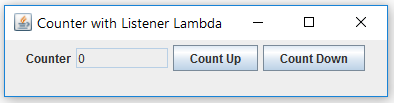

JDK 8 is a MAJOR upgrade, which introduces many new language features to support Functional Programming:
- Re-design the interface to support
publicdefaultandpublicstaticmethods. JDK 9 further supportsprivateandprivatestaticmethods. - Introduce lambda expressions as a shorthand for creating an instance of an anonymous inner class implementing a single-abstract-method interface.
- Retrofit the Collection framework, by adding new
defaultandstaticmethods to the existing interfaces. - Introduce the Stream API to efficiently handle filter-map-reduce operations in functional programming.
Interface public default, public static (JDK 8), private, private static (JDK 9) Methods
One of the main goal of interfaces is to let you "program at the specification instead of the actual implementation". You define the specifications in the interfaces, write the implementation subclasses, construct instances of implementation subclasses and upcast them to the interfaces. Once upcasted, you can only use methods defined in the interfaces, not in the implementation subclasses. In other words, you program at the specifications. Via polymorphism, overridden methods in the implementation subclasses will be invoked.
Prior to JDK 8, a Java interface can contain only two entities:
publicabstractmethods: Methods with only signature and without the implementation body. Allinterface's methods arepublicandabstractby default. (Take note that class's methods and fields are package by default.)publicstaticfinalfields (or constants). All interface's fields arepublicstaticfinalby default.
A subclass implements an interface MUST override ALL the abstract methods by providing the implementation body.
As a consequence, maintaining interfaces becomes difficult because if we were to add an additional abstract method to the interface, ALL the existing implementation subclasses must be retrofitted to implement the additional abstract method.
To resolve this constraint, starting from JDK 8, an interface can include public static methods and public default methods. JDK 9 further includes private method and private static methods into the interfaces.
- Both
publicdefaultmethod andpublicstaticmethod are non-abstract(or concrete), with an implementation method body. - Adding a
publicdefaultmethod or apublicstaticmethod to an existing interface does not require retrofitting the existing implementation subclasses. publicdefaultmethods are instance methods, where each instance has its own copy. Sinceinterface's methods arepublicandabstractby default prior to JDK 8, the keyworddefaultis needed to mark the method non-abstract. (Whereasclass's methods are non-abstractby default.)- The interface's
publicdefaultmethod are inherited by its sub-types (subclasses or sub-interfaces). The implementation subclasses or sub-interfaces CAN override apublicdefaultmethod inherited; but NOT necessarily. - The interface's
publicstaticmethod are NOT inherited by its sub-types. It can only be invoke via the super-type; and CANNOT invoke via its sub-types or sub-type's instances. (Unlike superclass'staticmethods, which are inherited by its subclasses, but CANNOT be overridden, but CAN be hidden by its subclasses. Read HERE.) - (JDK 9) The
private(instance) method andprivatestaticmethod are meant for helper methods within the interface. They are NOT inherited by its sub-types.privatestaticmethods can be called bypublic|privatestaticmethods within theinterface.
In summary, JDK 8/9's interface may include:
- (Pre-JDK 8)
publicstatic(class)finalfields or constants. - (Pre-JDK 8)
publicabstract(instance) methods WITHOUT implementation - MUST be overridden by the implementation subclasses. - (JDK 8)
publicdefault(instance) method with implementation - inherited by the implementation subclasses; MAY be overridden but NOT necessarily. - (JDK 8)
publicstatic(class) method with implementation - NOT inherited by its sub-types (unlike superclass'staticmethods). - (JDK 9)
private(instance) method with implementation - NOT inherited by its sub-types; CANNOT be invoked by otherstatic(class) methods within the interface. - (JDK 9)
privatestatic(class) method with implementation - NOT inherited by its sub-types; CAN be invoked by otherstatic(class) methods within the interface.
Interface public default (instance) Methods (JDK 8)
JDK 8's interface supports public default (instance) methods via a new keyword "default". Default methods are non-abstract. You need to provide the implementation body. The implementation subclasses are NOT require to override the default methods, but could do so if they desire. The default (instance) methods are always public.
public interface MyJ8InterfaceWithDefault {
void foo(); // abstract public (instance) (pre-JDK 8)
// Default methods are marked by keyword "default"
default void bar() { // public (instance) (JDK 8)
System.out.println("MyJ8InterfaceWithDefault runs default bar()");
}
//default void bar1();
//compilation error: missing method body, or declare abstract
}
If you did not provide the method body to default method, you will receive compilation "error: missing method body, or declare abstract", as shown in the above example.
public class MyImplClass1 implements MyJ8InterfaceWithDefault {
// Need to override ALL the abstract methods,
// but not necessarily for the default methods.
@Override
public void foo() {
System.out.println("MyImplClass1 runs foo()");
}
// Test Driver
public static void main(String[] args) {
MyImplClass1 c = new MyImplClass1();
c.foo(); //MyImplClass1 runs foo()
c.bar(); //MyJ8InterfaceWithDefault runs default bar()
}
}
Implementing Multiple Interfaces
Java classes can implement multiple interfaces (but extend only one superclass). In the above example, if another interface (say MyJ8InterfaceWithDefault1) also provides a default method bar(), and a class (say MyImplClass2) implements both MyJ8InterfaceWithDefault and MyJ8InterfaceWithDefault1, a conflict arises in the implementation body. To resolve this problem, JDK 8 requires the implementation classes to override the default methods if more than one versions are inherited. For example,
public interface MyJ8InterfaceWithDefault1 {
// This default method has same signature but different implementation as MyJ8InterfaceWithDefault
default void bar() { // public (instance) (JDK 8)
System.out.println("MyJ8InterfaceWithDefault1 runs default bar() too!");
}
}
public class MyImplClass2 implements MyJ8InterfaceWithDefault, MyJ8InterfaceWithDefault1 {
// Need to override ALL abstract methods
@Override
public void foo() {
System.out.println("MyImplClass2 runs foo()");
}
@Override
public void bar() {
System.out.println("MyImplClass2 runs overridden bar()");
}
// bar() exists in both interfaces.
// You MUST override, otherwise
//compilation error: class MyImplClass2 inherits unrelated defaults for bar()
// from types MyJ8InterfaceWithDefault and MyJ8InterfaceWithDefault1
public static void main(String[] args) {
MyImplClass2 c = new MyImplClass2();
c.foo(); //MyImplClass2 runs foo()
c.bar(); //MyImplClass2 runs overridden bar()
}
}
If you fail to override the default method, you will get an "error: class MyImplClass2 inherits unrelated defaults for bar() from types MyJ8InterfaceWithDefault and MyJ8InterfaceWithDefault1".
Interface public static (class) Methods (JDK 8)
Recall that a static method belong to a class/interface, instead of instances. You can invoke static method directly via ClassName.staticMethodName() without creating any instances.
The public static (class) method is similar to the default method. However, it is NOT inherited by its sub-types (unlike superclass' static method). By default, interface's static methods are public. JDK 9 supports private static methods.
public interface MyJ8InterfaceWithStatic {
void foo(); // abstract public (instance) (pre-JDK 8)
static void bar() { // public (class) (JDK 8)
System.out.println("MyJ8InterfaceWithStatic runs static bar()");
}
//static void bar1();
//compilation error: missing method body, or declare abstract
}
Like default methods, static methods are non-abstract and you need to provide the implementation method body. Otherwise, it triggers compilation error "missing method body, or declare abstract".
public class MyImplClass3 implements MyJ8InterfaceWithStatic {
// Need to override ALL abstract method
@Override
public void foo() {
System.out.println("MyImplClass3 run foo()");
}
// Test Driver
public static void main(String[] args) {
MyImplClass3 c = new MyImplClass3();
c.foo(); //MyImplClass3 run foo()
// Invoke static (class) method via ClassName.staticMethodName()
MyJ8InterfaceWithStatic.bar(); //MyJ8InterfaceWithStatic runs static bar()
// Interface's static methods are NOT inherited (Unlike Superclass)!!!
//MyImplClass3.bar();
//compilation error: cannot find symbol bar()
//c.bar();
//compilation error: cannot find symbol bar()
//MyJ8InterfaceWithStatic c1 = new MyImplClass3();
//c1.bar();
//compilation error: illegal static interface method call
}
}
Take note that:
static(class) methods are invoked viaClassName.staticMethodName().- Interface's
staticmethods are NOT inherited by its sub-types!!! Unlike superclass'sstaticmethods, which are inherited by its subclasses. This is probably because we can extend only one superclass, but can implement multiple interfaces to avoid conflicting inheritance.
public class MyImplClass4 implements MyJ8InterfaceWithStatic {
@Override
public void foo() {
System.out.println("MyImplClass4 run foo()");
}
//@Override //compilation error: static methods cannot be annotated with @Override
public static void bar() {
System.out.println("MyImplClass4 run bar()");
}
// This class provides its own definition for the static methods of the same name
// Test Driver
public static void main(String[] args) {
MyImplClass4 c = new MyImplClass4();
c.foo(); //MyImplClass4 run foo()
MyJ8InterfaceWithStatic.bar(); //MyJ8InterfaceWithStatic runs static bar()
MyImplClass4.bar(); //MyImplClass4 run bar()
c.bar(); //MyImplClass4 run bar()
}
}
Since the interface's static methods are NOT inherited by its sub-types, you CAN provide your own definition of the same static methods in the sub-types.
Are Java superclass's static methods inherited by its subclasses?
YES. Read HERE.
Are Java interface's static methods inherited by its sub-types (subclasses or sub-interfaces)?
NO. Probably because a sub-type can implement multiple interfaces, but can extend only one superclass.
Interface private (instance) and private static (class) methods (JDK 9)
JDK 9 introduces private (instance) and private static (class) methods into interface. This is meant for you to write helper methods for re-use within this interface only. Take note that private methods are accessible within the class/interface only.
private(instance) methods can be called bypublic default(instance) methods (and all instance methods) within the interface. For example,public interface MyJ9InterfaceWithPrivate { // private helper method for use by all instance methods inside this interface private void showMsg(String greeting, String name) { // private instance System.out.println(greeting + ", " + name); } default void sayHello(String name) { // public instance showMsg("hello", name); // call private instance helper method } default void sayHi(String name) { // public instance showMsg("hi", name); // call private instance helper method } // Other abstract, static methods }public class MyJ9InterfaceWithPrivateImpl implements MyJ9InterfaceWithPrivate { // to implement all abstract methods }public class MyJ9InterfaceWithPrivateTest { public static void main(String[] args) { // Invoke the instance method, thru a constructed instance MyJ9InterfaceWithPrivate h = new MyJ9InterfaceWithPrivateImpl(); h.sayHello("Peter"); //hello, Peter h.sayHi("Paul"); //hi, Paul } }private static(class) methods can be called bypublic/private static(class) methods, as well aspublic default(instance) andprivatemethods within the interface. For example,public interface MyJ9InterfaceWithPrivateStatic { // private static helper method for use by all static/instance methods inside this interface private static void showMsg(String greeting, String name) { // private class System.out.println(greeting + ", " + name); } default void sayHello(String name) { // public instance showMsg("hello", name); // call private static (class) helper method } static void staticSayHi(String name) { // public class showMsg("hi", name); // call private static (class) helper method } // Other abstract, static methods }public class MyJ9InterfaceWithPrivateStaticImpl implements MyJ9InterfaceWithPrivateStatic { // to implement all abstract methods }public class MyJ9InterfaceWithPrivateStaticTest { public static void main(String[] args) { // Invoke static (class) method (no need to construct an instance) MyJ9InterfaceWithPrivateStatic.staticSayHi("Peter"); //hi, Peter // Invoke instance method, thru an instance MyJ9InterfaceWithPrivateStatic h = new MyJ9InterfaceWithPrivateStaticImpl(); h.sayHello("Paul"); //hello, Paul } }
The benefits of interface private methods:
- Pull repeating codes into a helper method for code re-use.
- The
privatemethods are not exposed outside this class/interface, nor inherited by its subclasses.
Interface "Instance" Methods (JDK 8)
There are three kinds of methods in JDK 8 interfaces: abstract (instance), default (instance) and static (class). All methods are public.
JDK 8 documentation for interfaces lists "All methods", as well as "Static methods", "Instance methods" (non-static, i.e., abstract and default), "Abstract methods" and "Default methods". For example, checkout interface java.util.stream.Stream. Take note that private method (JDK 9) are not shown in the API documentation, as they are not meant for re-use.
Interface vs. abstract Superclass
Prior to JDK 8, a Java interface is a pure abstract superclass, containing public abstract (instance) methods without implementation. JDK 8 introduces public default (instance) and public static (class) methods. JDK 9 introduces private (instance) and private static (class) methods.
JDK 8/9 blurs the distinction between interface and abstract superclass.
- Variables: Interface can contain only class variables (
public static final). Abstract superclass can contain instance variables, but interface cannot. - Method Access Control: All methods (
abstract,staticanddefault) in interface arepublic. JDK 9 supportsprivate(instance) andprivatestatic(class) methods. - A Java class can extend one superclass, but can implement multiple interfaces.
Lambda Expressions
Reference:
- Java Tutorial "Lambda Expression" @ http://docs.oracle.com/javase/tutorial/java/javaOO/lambdaexpressions.html.
- "Java SE 8: Lambda Quick Start" @ http://www.oracle.com/webfolder/technetwork/tutorials/obe/java/Lambda-QuickStart/index.html.
- Java Tutorial "Collections" @ http://docs.oracle.com/javase/tutorial/collections/.
- Java Tutorial "Aggregate Operations" @ http://docs.oracle.com/javase/tutorial/collections/streams/index.html.
The most notable new language feature in JDK 8 is the Lambda Expressions, which provides a concise notation to construct an instance of an anonymous inner class implementing a single-abstract-method interface.
JDK 8 also retrofitted the Collection framework by adding new default and static methods with Lambda expression to the interfaces, and the introduction of streams API, to support chaining and aggregate operations (or filter-map-reduce) in functional programming.
Functional Interfaces
An interface containing only ONE abstract method is called a single-abstract-method interface or functional interface.
JDK has many functional interfaces. The most commonly-used are:
- Interface
java.awt.event.ActionListenerwith single abstract methodactionPerformed(): used asActionEventhandler. - Interface
java.lang.Runnablewith single abstract methodrun(): for starting a new thread. - Interface
java.util.Comparatorwith single abstract methodcompare(): used inCollections.sort()orArrays.sort().
These interfaces are commonly implemented in an anonymous inner class.
@FunctionalInterface Annotation
The @FunctionalInterface annotation can be used to mark and inform the compiler that an interface contains only one abstract method. This is useful to prevent accidental addition of extra abstract methods into a functional interface.
Example 1: Hello Lambda
We shall first define an interface with a single abstract method (called functional interface) as follows:
HelloFunctionalInterface.java
// A Single-Abstract-Method Interface called Functional Interface @FunctionalInterface // ask compiler to check this interface contains only one abstract method public interface HelloFunctionalInterface { void sayHello(String name); // public abstract }
We could define an anonymous inner class implementing the interface, construct an instance and invoke the method as follows:
HelloFunctionalInterfaceInnerClassTest.java
public class HelloFunctionalInterfaceInnerClassTest {
public static void main(String[] args) {
// Define an anonymous inner class implementing the interface.
// Construct an instance and invoke the method.
HelloFunctionalInterface h = new HelloFunctionalInterface() {
public void sayHello(String name) {
System.out.println("Hello, " + name);
}
};
h.sayHello("Paul");
}
}
JDK 8 introduces lambda expressions, which provides a shorthand notation for creating an instance of an anonymous inner class implementing a functional interface (single-abstract-method interface). The above can be written in a single-line as follows:
HelloFunctionalInterfaceLambdaTest.java
public class HelloFunctionalInterfaceLambdaTest {
public static void main(String[] args) {
// Define an anonymous inner class implementing the interface.
// Construct an instance and invoke the method.
HelloFunctionalInterface h = name -> System.out.println("Hello, " + name);
// Using lambda expression as a shorthand for the above
h.sayHello("Peter");
}
}
Notes:
- The lambda expression consists of the method parameter and the method body, separated by
->. - The lambda expression is an expression which evaluates to a value. It evaluates to an instance of an anonymous inner class implementing a functional interface.
- The name of the functional interface can be deduced from the type declaration. The parameters-type and return-type of the method can also be deduced, because there is only one method in the functional interface.
Example 2: Swing's ActionListener Functional Interface Lambda
In Swing programs, we use an ActionListener to handle the ActionEvent, triggered by pushing a button. ActionListener is a functional interface containing a single abstract method, defined as follows:
java.awt.event.ActionListener
package java.awt.event; @FunctionalInterface // contains only one abstract method public interface ActionListener extends java.util.EventListener { void actionPerformed(ActionEvent e); // public abstract }
The following Swing counter program contains a text field to display the count, and two buttons for counting up and counting down.
SwingCounterLambda.java
1 2 3 4 5 6 7 8 9 10 11 12 13 14 15 16 17 18 19 20 21 22 23 24 25 26 27 28 29 30 31 32 33 34 35 36 37 38 39 40 41 |
import java.awt.*;
import java.awt.event.*;
import javax.swing.*;
public class SwingCounterLambda extends JFrame {
private JTextField tfCount;
private int count = 0;
public SwingCounterLambda() {
Container cp = getContentPane();
cp.setLayout(new FlowLayout());
cp.add(new JLabel("Counter"));
tfCount = new JTextField(count + "", 8);
tfCount.setEditable(false);
cp.add(tfCount);
// Construct an instance of an anonymous inner class
// implementing ActionListener as the ActionEvent handler
JButton btnUp = new JButton("Count Up");
cp.add(btnUp);
btnUp.addActionListener(new ActionListener() {
public void actionPerformed(ActionEvent e) {
tfCount.setText(++count + "");
}
});
// Using a Lambda Expression which evaluates to an instance of
// an anonymous inner class implementing ActionListener functional interface
JButton btnDown = new JButton("Count Down");
cp.add(btnDown);
btnDown.addActionListener(e -> tfCount.setText(--count + ""));
setSize(400, 100);
setVisible(true);
}
public static void main(String[] args) {
// Using Lambda Expression which evaluates to a Runnable instance
SwingUtilities.invokeLater(() -> new SwingCounterLambda());
}
} |
How It Works
- Using an anonymous inner class (Line 22 to 26) requires at least 5 lines of codes, which can be replaced by a one-liner Lambda Expression (Line 32). You can treat Lambda Expression as a shorthand. I will explain the syntax in the following section.
- Similar, the
Runnablecan be coded in a one-liner using Lambda Expression (Line 39).
JavaFX
For JavaFX, you can also replace an anonymous inner class EventHandler with a one-line lambda expression which evaluates to an instance of an anonymous inner class implementing a functional interface. For example,
// Anonymous inner class btn.setOnAction(new EventHandler<ActionEvent>() { @Override public void handle(ActionEvent e) { System.out.println("hello, world"); } }); // Lambda Expression btn.setOnAction(e -> System.out.println("hello, world"));
Syntax of Lambda Expressions and Method References
Lambda Expressions (args) -> { body }
Prior to JDK 8, to construct an instance of an anonymous inner class that implements a Functional Interface (Single-Abstract-Method Interface) requires many lines of codes. Lambda Expression provides a shorthand notation. Moreover, you can pass a lambda expression as a method argument (treating code as data), as shown in the above example.
Lambda Expression defines the "sole" method of a Functional Interface. It consists of 2 parts: parameters and method body, separated by ->. The parameters are separated by commas and enclosed by parentheses. The parentheses can be omitted if there is only one parameter. The method body could be a statement or a block. The method name is omitted, as it can be inferred from the sole abstract method of the Functional Interface. The parameters' type and the return type are also optional, as they can be inferred from the method signature.
Lambda expression is an expression, which evaluates to a value. It evaluates to an instance of inner class implementing the deduced functional interface.
The syntax is:
(arguments) -> { body }
For examples:
() -> statement // No argument and one-statement method body arg -> statement // One argument (parentheses can be omitted) and method body (arg1, arg2, ...) -> { body-block } // Arguments separated by commas and the block body (Type1 arg1, Type2 arg2, ...) -> { method-body-block; return return-value; } // With arguments and block body
In other languages that support function variables or function objects (such as C++ and Python), Lambda is used to define an anonymous function. However, in JDK 8, Lambda expression is used to define the method implementation of an instance of an anonymous inner class implementing a Single-Abstract-Method Interface!
In fact, if you try to write:
int i = () -> 5; //compilation error: incompatible types: int is not a functional interface
But,
// Using Lambda expression to construct a Runnable instance (of an anonymous inner class implementing Runnable). // In other words, Lambda expression evaluates to an instance of Function Interface Runnable r = () -> System.out.println("run run()"); // Runnable is a functional interface // Lambda expression is used to define the implementation of the abstract method run() // Using Lambda expression to construct an ActionListener instance ActionListener lis = e -> System.out.println("run actionPerformed()");
Java is an Object-oriented Programming language. Everything in Java are objects (except primitives). Functions are not objects in Java (but part of an object), and hence, they cannot exist by themselves. Unlike other languages (such as C++, Python and JavaScript) functions can exist by themselves, and you can pass a function as a function's argument, and return a function from a function.
JDK 8's Functional Interface and Lambda Expression allow us to construct a "Function Object" in a one-liner (or a fewer lines of codes). However, it can be used only for objects with single abstract method.
Method References Class::method
JDK 8 introduced a new operator :: to reference a method without invoking it - called Method Reference. For example,
// Method References System.out::println // static method of System.out // same as: e -> System.out.println(e) Person::getName // instance method of class Person // same as p -> p.getName() // Constructor References Integer::new // Construct an Integer instance // same as: i -> new Integer(i) int[]::new // Construct an int array // same as: len -> new int[len]
We can replace Lambda Expression t -> t.method() with a method reference ClassT::method; or t -> Class.staticMethod(t) with Class::staticMethod. For example,
// A Single-Abstract-Method Interface (Functional Interface) @FunctionalInterface public interface HelloFunctionalInterface { void sayHello(String name); // public abstract }
public class HelloFunctionInterfaceMethodReferenceTest {
public static void main(String[] args) {
// Using JDK 8 method references
HelloFunctionalInterface h = System.out::println;
// same as:
//HelloFunctionalInterface h = name -> System.out.println(name);
h.sayHello("Peter");
//Peter
}
}
Example 3: Runnable Lambda
The Runnable interface defines a single abstract method, defined as follows:
java.lang.Runnable
@FunctionalInterface
public interface Runnable {
void run(); // public abstract
}
We can create a Runnable object via an anonymous inner class (Pre-JDK 8) or Lambda Expression (JDK 8), as follows:
RunnableLambdaTest.java
1 2 3 4 5 6 7 8 9 10 11 12 13 14 15 |
public class RunnableLambdaTest {
public static void main(String[] args) {
// Create an instance of an anonymous inner class implements Runnable interface
Runnable r1 = new Runnable() {
public void run() {
System.out.println("Runnable 1");
}
};
// Using a one-liner Lambda Expression as a shorthand of the above
Runnable r2 = () -> System.out.println("Runnable 2");
r1.run(); //Runnable 1
r2.run(); //Runnable 2
}
} |
[TODO] Explanation
Example 4: Binary Operator Functional Interface
Let's define a Functional Interface to denote a binary operator (such as addition or subtraction), as follows:
MyIntBinaryOperator.java
@FunctionalInterface
public interface MyIntBinaryOperator {
// Apply a custom operator to two int operands and return an int
int applyAsInt(int left, int right);
}
In the following class, the method operate() takes 2 int's and an object of the above Functional Interface as parameters, and carries out the binary operation.
MyMathBinaryOperation.java
public class MyMathBinaryOperation {
// Define instances of MyIntBinaryOperator for add, subtract, multiply and divide
// The single abstract method takes two int's and return an int
public MyIntBinaryOperator add = (left, right) -> left + right;
public MyIntBinaryOperator sub = (left, right) -> left - right;
public MyIntBinaryOperator mul = (left, right) -> left * right;
public MyIntBinaryOperator div = (left, right) -> left / right;
// Carry out the binary operation with two operands and operator
public int operate(int left, int right, MyIntBinaryOperator operator) {
return operator.applyAsInt(left, right);
}
// Test Driver
public static void main(String[] args){
MyMathBinaryOperation op = new MyMathBinaryOperation();
// Use pre-defined IntBinaryOperator
System.out.println("8 + 9 = " + op.operate(8, 9, op.add)); //8 + 9 = 17
System.out.println("8 - 9 = " + op.operate(8, 9, op.sub)); //8 - 9 = -1
System.out.println("8 x 9 = " + op.operate(8, 9, op.mul)); //8 x 9 = 72
System.out.println("8 / 9 = " + op.operate(8, 9, op.div)); //8 / 9 = 0
// Define a custom IntBInaryOperator via a Lambda Expression
System.out.println("2 ^ 5 = " + op.operate(2, 5, (a, b) -> (int)Math.pow(a, b))); //2 ^ 5 = 32
}
}
[TODO] Explanation
Package java.util.function (JDK 8)
The JDK 8 new package java.util.function provides similar functional interfaces, such as type-specific IntBinaryOperator, LongBinaryOperator, DoubleBinaryOperator, and a generic BinaryOperator.
We will discuss the new java.util.function package in details later.
Example 5: Comparator<T> Lambda
We can use the static method Collections.sort() to custom sort a Collection object, which has the following signature:
// Utility Class java.util.Collections
public static <T> void sort(List<T> list, Comparator<? super T> c)
The second argument of sort() is a Functional Interface Comparator, which contains an abstract method compare() to compare two objects of the given Collection, defined as follows:
java.util.Comparator
package java.util;
@FunctionalInterface
public interface Comparator<T> {
// Compares its two arguments for order.
// Returns a negative integer, zero, or a positive integer
// as the first argument is less than, equal to, or greater than the second.
int compare(T o1, T o2); // public abstract
}
Suppose that we have a List of Person objects, and want to perform a custom sort. Again, we could use an anonymous inner class (Pre-JDK 8), or a Lambda Expression (JDK 8) to construct a Comparator instance.
Person.java
1 2 3 4 5 6 7 8 9 10 11 12 13 14 15 16 17 18 19 20 21 22 23 24 25 26 27 28 29 30 31 32 33 |
public class Person {
private String name; // private instance variables
private int age;
public Person(String name, int age) { // constructor
this.name = name; this.age = age;
}
public String getName() { // getter for name
return name;
}
public int getAge() { // getter for age
return age;
}
public String toString() { // describe itself
return name + "(" + age + ")";
}
public void sayHello() { // for testing
System.out.println(name + " says hello");
}
// Compare two Person objects by name strings, case insensitive
@Override
public boolean equals(Object o) {
return o != null && o instanceof Person && this.name.equalsIgnoreCase(((Person)o).name);
}
// To be consistent with equals()
// Two objects which are equal shall have the same hashcode.
@Override
public int hashCode() {
return this.name.toLowerCase().hashCode();
}
}
|
ComparatorLambdaTest.java
import java.util.*;
public class ComparatorLambdaTest {
public static void main(String[] args) {
List<Person> pList = new ArrayList<>(); // JDK 7
pList.add(new Person("Peter", 21));
pList.add(new Person("Paul", 18));
pList.add(new Person("Patrick", 22));
System.out.println(pList);
//[Peter(21), Paul(18), Patrick(22)] (Unsorted)
// In JDK 9, you can write:
List<Person> pList9 = List.of(new Person("Peter", 21), new Person("Paul", 18), new Person("Patrick", 22));
System.out.println(pList9);
// Using an anonymous inner class to create a Comparator instance to sort by name
Collections.sort(pList, new Comparator<Person>() {
@Override
public int compare(Person p1, Person p2){
return p1.getName().compareToIgnoreCase(p2.getName()); // String's compareToIgnoreCase()
}
});
System.out.println(pList);
//[Patrick(22), Paul(18), Peter(21)] (Sort by name)
// Using a Lambda Expression to create a Comparator instance to sort by age
Collections.sort(pList, (p1, p2) -> p1.getAge() - p2.getAge());
System.out.println(pList);
//[Paul(18), Peter(21), Patrick(22)] (Sort by age)
}
}
How It Works
- For the first
sort(), we use an anonymous inner class to construct an instance ofComparatorto sort by name; whereas for the secondsort(), we replaced by a one-liner lambda expression to construct an instance ofComparatorto sort by age.
Read "List Ordering/Searching/Sorting with Comparable<T>/Comparator<T>" for more details.
Introduction to Functional Programming
Object-Oriented Programming vs. Functional Programming
Object-Oriented Programming (OOP) is a programming paradigm based on the concept of objects, which encapsulate data and code (or behavior) in the same box.
Functional programming (FP) is a programming paradigm that treats computation as applying a series of mathematical functions (or transforms) to the data. It avoids changing-state and mutable data.
In a program, there are two primary components: data and code. OOP brings together data and its associated code into an object to make it easier to understand how a program works. FP says that data and behavior are distinctively different and should be kept separate for clarity.
As a Java Programmer, you should be familiar with OOP, but FP could be new to you.
FP's Key Concepts
- First-class functions: You can store functions in variables or data structures; you can pass them as parameters, or return them from other functions.
- Immutability: The data and objects are immutable, i.e., the their state cannot be changed after their creation.
- No Side Effects: You use pure functions that return the same result given the same inputs without modifying the state of other objects or interact with the outside world.
FP's Benefits
- Conciseness: Working with first-class functions could be more powerful in abstraction, and let you avoid duplicate code. Anonymous functions can be written in concise syntax called lambda expression.
- Safe Multithreading: Immutable data and pure functions ensure that unsafe modifications won't happen, and you don't need to worry about complex synchronization schemes.
- Ease in Testing: Pure functions (without side effects) can be tested in isolation, without the need to setup the entire environment that they depend on.
Example: Filter-Map-Reduce Use Case
Let's illustrate the differences of the two approaches with the following example.
Suppose that we have a list of persons (containing names and ages), and we wish to find the average age of all the adults. This use case is known as filter-map-reduce (or map-filter-reduce or map-reduce).
- Loop through the entire list to process each element (in this example, person).
- Filter with some criteria (age >= 21).
- Map or transform the element (from person to age).
- Reduce or collect the desired result (the average age).
OOP Approach
In OOP, we will write a class called Person, which encapsulates the data (name, age) and methods (getName(), getAge()). See above "Person.java".
We construct a List<Person> and apply the filter-map-reduce operations via a loop on each of the Person objects.
1 2 3 4 5 6 7 8 9 10 11 12 13 14 15 16 17 18 19 20 21 22 23 24 |
import java.util.List;
public class FilterMapReduceOOPTest {
public static void main(String[] args) {
List<Person> pList = List.of( // (JDK 9) create an unmodifiable List
new Person("Peter", 21),
new Person("John", 16),
new Person("Paul", 60)
);
System.out.println(pList); //[Peter(21), John(16), Paul(60)]
|
In OOP:
- We first define the class.
- We then create instances of class (
List<Person>) - We apply filter-map-reduce operations on each of the elements, via a for-each loop.
- Data are fed to objects during construction. We invoke methods on objects to interact with the data stored.
- The data (instances) are typically mutable.
FP Approach
In FP, the data and behavior are separated. Data are often kept in a simple structure, such as an array, lists, map, or record (JDK 14). Behavior is implemented in tiny, standalone and specialized functions. Data are immutable.
1 2 3 4 5 6 7 8 9 10 11 12 13 14 15 16 17 18 |
import java.util.Map;
public class FilterMapReduceFPTest {
public static void main(String[] args) {
// Data are kept in simple structure such as a map of key-value pairs
Map<String, Integer> pMap = Map.of("Peter", 21, "John", 16, "Paul", 60); // (JDK 9)
System.out.println(pMap); //{John=16, Peter=21, Paul=60}
// Using JDK 8 Stream API for filter-map-reduce operation
double average = pMap
.entrySet()
.stream()
.filter(p -> p.getValue() >= 21)
.mapToInt(Map.Entry::getValue)
.average()
.getAsDouble();
System.out.println(average); //40.5
}
}
|
Explanation: You need to read the entire article to understand the syntax, but notice that data are passed through a sequence of operations (a chain of functions) to produce the result.
In FP, data are kept in simple arrays, hashes, records, instead of high-level objects. Data are not mix with behavior. Data are immutable and shared state is avoided. FP relies heavily on tiny and specialized functions that do one small part of a larger job, and delegate the details to other tiny functions.
FP views computation as data transformation: you start with the original dataset, apply transformations to generate a new dataset. The contents (or state) of the original data does not change. A new state after the transformation is created.
FP focuses computation on pure functions. A pure function is a function where:
- The return value depends only on the input, i.e., the same input always produces the same return value.
- There is no side effect.
- It does not alter the data that was passed into it.
OOP and FP Comparison
- FP is good when you have a fixed set of data; and as your application evolves, you add new functions to operate on existing data. The existing functions are left alone. For example, [TODO]
- FP is often used in Big Data Analytic.
- FP is good in concurrent environments (parallel processing). The immutable state enables easy concurrency.
- OOP is good when you have a fixed set classes (data and behavior); and as your application evolves, you add new classes (with composition or inheritance). The existing classes are left alone. For example, [TODO]
However, when the evolution goes the wrong way, you have problems:
- Adding new data to a FP program may require modifying many existing functions. For example, [TODO]
- Adding a new method to an OO program may require modifying many existing classes. For example, [TODO]
However, you don't necessarily have to choose between OOP and FP, you can write applications with an OO architecture using many functional concepts. Developers can create tiny, standalone and specialized functions in an OO environment.
JDK 8's Support for FP
In order to support functional programming, JDK 8 re-designs the interface, introduces lambda expression, retrofits the Collection framework and introduce Stream API.
We have describe the new interface and lambda expressions. We shall continue into Stream API and Functional Programming.
Functional Programming in Java
Let's revisit the previous example on filter-map-reduce.
Example Use Case: Filter-Map-Reduce
Suppose that we have a List (a subclass of Collection) of Person objects and we want to:
- Loop through the entire list to process each element (i.e.,
Personobject). - Filter with some criteria (e.g.,
age >= 21). - Map or transform the element (e.g., from
Persontonameorage). - Reduce or collect the desired result (e.g., invoke
sayHello(),toString(), or find the average age).
The codes should be general to handle any filtering criteria, any mapping transforms, and any reduction operations.
Filter-Map-Reduce 1: Roll Your Own Functional Interfaces for Filter-Reduce
Person.java: see "Person.java".
MyPredicate<T>.java: Define a Functional Interface called MyPredicate<T> to perform filtering, based on a boolean function test(), as follows. A predicate is a boolean function or relation that returns true to indicate such a relation, i.e., P: o -> {true, false}.
@FunctionalInterface // single-abstract-method interface public interface MyPredicate<T> { // use generic to handle all types of objects boolean test(T o); // Perform this boolean test on the given Object }
MyConsumer<T>.java: Define a Functional Interface called MyConsumer<T> to run some operations on a Person object, as follows. A consumer is a function that has side effect (such as printing) and returns void, i.e., C: o -> void.
@FunctionalInterface // single-abstract-method interface public interface MyConsumer<T> { // use generic to handle all types of objects void accept(T o); // Run the side-effect on the given object }
ProcessPersonList1.java: we shall define a static method process() to carry out the filter-reduce operation, by looping through the List<Person>. We can test with various filters and reduction operations as in test driver:
import java.util.List;
public class ProcessPersonList1 {
// A generic method given a List<T>, filter with MyPredicate<T>, and consume with MyConsumer<T>
public static <T> void process(List<T> lst, MyPredicate<T> predicate, MyConsumer<T> consumer) {
for (T e : lst) {
if (predicate.test(e)) { // Filter
consumer.accept(e); // Reduce
}
}
}
public static void main(String[] args) {
List<Person> pList = List.of(new Person("Peter", 21), // (JDK 9) create an unmodificable list
new Person("John", 60),
new Person("Paul", 15));
System.out.println(pList); //[Peter(21), John(60), Paul(15)]
// Pre-JDK 8: Using an anonymous inner class to implement the interface
process(
pList,
new MyPredicate<Person>() {
@Override
public boolean test(Person p) {
return p.getAge() >= 21; // Filtering criteria
}
},
new MyConsumer<Person>() {
@Override
public void accept(Person p) {
p.sayHello(); // Apply this operation
}
}
);
//Peter says hello
//John says hello
// JDK 8: Using Lambda Expressions to create an instance of an inner class
// implementing the functional interface
process(pList, p -> p.getAge() < 21, Person::sayHello);
//Paul says hello
}
}
Dissecting the Program
- The
MyPredicate<T>andMyConsumer<T>are defined using generics to handle all types of objects. During instantiation, we replaceTwithPersonto handle thePersonobjects. - The
staticmethodprocess()is also defined with generics. We need to declare the generic type<T>before the return type. - A Functional Interface is an interface that contains only one abstract method, which can be marked by
@FunctionalInterfaceannotation. - A lambda expression can be used as a shorthand to create an instance of an anonymous inner class implementing a functional interface.
- [TODO] more
Filter-Map-Reduce 2: Using JDK 8 Pre-defined Functional Interfaces in Package java.util.function
JDK 8 added a new package java.util.function, which contains many standard functional interfaces, including Predicate<T> and Consumer<T>, defined with generics, as follows:
java.util.function.Predicate<T>:
package java.util.function;
@FunctionalInterface
public interface Predicate<T> {
boolean test(T t); // Evaluates this predicate on the given object.
...... // other default and static methods (JDK 8)
}
java.util.function.Consumer<T>:
package java.util.function;
@FunctionalInterface
public interface Consumer<T> {
void accept(T t); // Run this operation on the given object.
...... // other default and static methods (JDK 8)
}
Instead of rolling our own functional interfaces in the previous example, we shall use the pre-defined ones.
ProcessPersonList2.java: We re-write process(), which uses the standard functional interfaces Predicate<T> and Consumer<T> as follows:
import java.util.List;
import java.util.function.Predicate;
import java.util.function.Consumer;
public class ProcessPersonList2 {
// A generic method given a List<T>, filter with Predicate<T>, and consume with Consumer<T>
public static <T> void process(List<T> lst, Predicate<T> predicate, Consumer<T> consumer) {
for (T e : lst) {
if (predicate.test(e)) {
consumer.accept(e);
}
}
}
public static void main(String[] args) {
List<Person> pList = List.of(new Person("Peter", 21), // (JDK 9) create an unmodificable List
new Person("John", 60),
new Person("Paul", 15));
System.out.println(pList); //[Peter(21), John(60), Paul(15)]
// Using JDK 8 standard functional interfaces Predicate<T> and Consumer<T> with lambda expressions
process(pList, p -> p.getAge() >= 21, Person::sayHello);
//Peter says hello
//John says hello
}
}
Filter-Map-Reduce 3: Filter-Map-Reduce
Suppose that instead of operating on the filtered List<Person>, we want to operate on a certain property of Person (e.g., name or age), then we need to add a mapper or transformer to transform a Person object to the property name or age. This is known as filter-map-reduce pattern. We shall use the standard Functional Interface java.util.function.Function as our mapper, which transforms from type T to R, i.e., F: T -> R, defined as follows:
java.util.function.Function:
package java.util.function;
@FunctionalInterface
public Function<T, R> {
R apply(T t); // Apply this mapping to the given object of type T and return an object of type R
...... // other default and static methods (JDK 8)
}
ProcessPersonList3.java: We re-write method process() and test this new method as follows:
import java.util.List;
import java.util.function.Predicate;
import java.util.function.Function;
import java.util.function.Consumer;
public class ProcessPersonList3 {
// A generic method given a List<T>, filter with Predicate<T>, apply mapper Function<T,R>,
// and reduce with Consumer<R> (filter-map-reduce pattern)
public static <T,R> void process(List<T> lst,
Predicate<T> predicate,
Function<T, R> mapper,
Consumer<R> consumer) {
for (T e : lst) {
if (predicate.test(e)) {
R r = mapper.apply(e); // Apply mapper to transform from T to R
consumer.accept(r);
}
}
}
public static void main(String[] args) {
List<Person> pList = List.of(new Person("Peter", 21), // (JDK 9) create an unmodificable List
new Person("John", 60),
new Person("Paul", 15));
System.out.println(pList); //[Peter(21), John(60), Paul(15)]
// (JDK 8) Using Lambda Expression
process(
pList,
p -> p.getAge() >= 21, // filter
Person::getName, // map
System.out::println // reduce
);
//Peter
//John
}
}
[TODO] Explanation
Package java.util.function (JDK 8)
JDK 8 introduces a new package java.util.function, which provides a number of Standard Functional Interfaces. Besides declaring one abstract method, these interfaces also heavily use default and static methods (with implementation) to enhance their functionality.
There are four basic patterns (suppose that t is an instance of T):
Predicate<T>: t -> boolean: Apply boolean test on the givent.Function<T, R>: t -> r: Transform or mapping fromttor.Consumer<T>: t -> void: Consumetwith side effect such as printingSupplier<T>: () -> t: Supply an instancet.
The following table summaries the Functional Interfaces. Take note that with the use of lambda expressions, you only have to focus on the parameters and return type/value. You can ignore the abstract method name as it will be inferred.
| Pattern | Functional Interface | Lambda Expression | Explanation |
|---|---|---|---|
| Predicate | Predicate<T> | t -> boolean | Apply boolean test on the given element t |
| BiPredicate<T, U> | (t, u) -> boolean | Binary predicate on t and u |
|
| Function | Function<T, R> | t -> r | Transform (Map) from t to r |
| BiFunction<T, U, R> | (t, u) -> r | Binary function | |
| UnaryOperator<T> | t -> t | A unary operator on T, special case (extends) of Function<T, T> |
|
| BinaryOperator<T> | (t, t) -> t | A binary operator on T, special case (extends) of BiFunction<T, T, T> |
|
| Consumer | Consumer<T> | t -> void | Consume t with side effect such as printing |
| BiConsumer<T, U> | (t, u) -> void | Binary consumer | |
| Supplier | Supplier<T> | () -> t | Supply an instance t |
| BooleanSupplier | () -> boolean | Supply a boolean value |
Primitive Type Specializations for int, long and double
For greater efficiency, specialized functional interfaces are defined for primitive types int, long and double, as summarized below:
| Pattern | Functional Interface | Lambda Expression |
|---|---|---|
| Predicate | IntPredicate | int -> boolean |
| Function | IntFunction<R> | int -> r |
| IntToDoubleFunction | int -> double | |
| IntToLongFunction | int -> long | |
| ToIntFunction<T> | t -> int | |
| ToIntBiFunction<T, U> | (t, u) -> int | |
| IntUnaryOperator | int -> int | |
| IntBinaryOperator | (int, int) -> int | |
| Consumer | IntConsumer | int -> void |
| ObjIntConsumer<T> | (t, int) -> void | |
| Supplier | IntSupplier | () -> int |
Notes: Same Functional Interfaces as int are also defined for primitives long and double.
Some of the functional interfaces with examples are elaborated below.
Predicate<T>: t -> boolean
A predicate is a boolean function in the form of P: T -> {true, false}.
The java.util.function.Predicate functional interface contains:
abstractbooleanmethodtest()to implement predicate test.defaultmethodsand(),or()andnegate()for logical AND, OR and NOT withtest().staticmethodisEqual()for equality test on arguments.
How it works?
- A
Predicateinstance implementsPredicateinterface to provide implementation for thetest()abstractmethod. - Methods such as
aStream.filter(aPredicate)takesaPredicateas its argument. It then invokesaPredicate.test(e)on each of its elementse, which returnstrue/false, to decide if the element is to be filtered in/out. - Lambda expression hides the name of the
abstractmethod and thePredicate, e.g.,aStream.filter(p -> p.getAge() >= 21). You simply apply the method body to each of the elementsp.
Study the code, which is extracted from the JDK source.
package java.util.function; import java.util.Objects; @FunctionalInterface public interface Predicate<T> { boolean test(T t); // Evaluates this predicate on the given argument. // Returns a composed predicate that represents a short-circuiting logical AND // of this predicate and another. default Predicate<T> and(Predicate<? super T> other) { Objects.requireNonNull(other); // ensure "other" is NOT null return (t) -> this.test(t) && other.test(t); // return an instance of Predicate<T> } // Returns a composed predicate that represents a short-circuiting logical OR // of this predicate and another. default Predicate<T> or(Predicate<? super T> other) { Objects.requireNonNull(other); return (t) -> test(t) || other.test(t); } // Returns a predicate that represents the logical negation of this predicate. default Predicate<T> negate() { return (t) -> !test(t); } // A static method to create a Predicate that tests if if the element is the same // as the the argument, according to Objects.equals(Object, Object) static <T> Predicate<T> isEqual(Object targetRef) { return (null == targetRef) ? Objects::isNull // true if both are null : object -> targetRef.equals(object); } }
Example on Predicate<T>
import java.util.List;
import java.util.function.Predicate;
public class FunctionInterfacePredicateTest {
public static void main(String[] args) {
List<Person> pList = List.of(new Person("Peter", 21), new Person("John", 60), new Person("Paul", 15));
System.out.println(pList); //[Peter(21), John(60), Paul(15)]
// Define Predicate objects, which are boolean tests that returns true/false, to be used as filtering criteria
Predicate<Person> adult = p -> p.getAge() >= 21;
Predicate<Person> senior = p -> p.getAge() >= 55;
Predicate<Person> junior = p -> p.getAge() <= 15;
pList.stream().filter(adult).map(Person::getName).forEach(System.out::println);
//Peter
//John
pList.stream().filter(senior.or(junior)).forEach(System.out::println);
//John(60)
//Paul(15)
pList.stream().filter(senior.and(junior)).forEach(System.out::println);
//no output
pList.stream().filter(adult.negate()).forEach(System.out::println);
//Paul(15)
Predicate<Person> notAdult = adult.negate();
pList.stream().filter(notAdult).forEach(System.out::println);
//Paul(15)
// static method isEqual(Object) creates a Predicate to test if the element is the same as the argument
Predicate<Person> john = Predicate.isEqual(new Person("john", 80)); // name only ignore case
pList.stream().filter(john.negate()).forEach(System.out::println); // filter out John
//Peter(21)
//Paul(15)
}
}
Function<T, R>: t -> r
A Function is a transform or mapping from t to r.
The source code (extracted from JDK source) is as follows:
package java.util.function; import java.util.Objects;
@FunctionalInterface public Function<T, R> { // Applies this Function to the given argument. R apply(T t); // Returns a composed Function that first applies the before Function to its input, // and then applies this Function to the result default <V> Function<V, R> compose(Function<? super V, ? extends T> before) { Objects.requireNonNull(before); // ensure before is NOT null return (V v) -> this.apply(before.apply(v)); // before.apply then this.apply } // Returns a composed Function that first applies this Function to its input, // and then applies the after Function to the result default <V> Function<T, V> andThen(Function<? super R, ? extends V> after) { Objects.requireNonNull(after); return (T t) -> after.apply(this.apply(t)); } // static method to generate a Function that always returns its input argument static <T> Function<T, T> identity() { return t -> t; } }
Example on Function<T,R>
import java.util.List;
import java.util.function.Function;
import java.util.function.Predicate;
public class FunctionInterfaceFunctionTest {
public static void main(String[] args) {
List<Person> pList = List.of(new Person("Peter", 21), new Person("John", 60), new Person("Paul", 15));
System.out.println(pList); //[Peter(21), John(60), Paul(15)]
// Define Function<T, R> objects for transforming from t to r
Function<Person, String> name = Person::getName;
Function<String, Integer> length = String::length;
Function<Integer, String> mask = n -> "*".repeat(n);
Predicate<Person> junior = p -> p.getAge() < 21;
pList.stream().filter(junior).map(name).forEach(System.out::println);
//Paul
// Belows are the equivalent
pList.stream().filter(junior).map(name.andThen(length).andThen(mask)).forEach(System.out::println);
//****
pList.stream().filter(junior).map(length.compose(name).andThen(mask)).forEach(System.out::println);
//****
pList.stream().filter(junior).map(name).map(length).map(mask).forEach(System.out::println);
//****
pList.stream().filter(junior).map(p -> "*".repeat(p.getName().length())).forEach(System.out::println);
//****
}
}
BiFunction<T,U,R>: (t,u) -> r
package java.util.function; import java.util.Objects;
@FunctionalInterface public BiFunction<T, U, R> { // Applies this function to the given arguments. R apply(T t, U u); // Returns a composed function that first applies this function to its inputs, // and then applies the after function to the result. default <V> BiFunction<T, U, V> andThen(Function<? super R, ? extends V> after) { Objects.requireNonNull(after); return (T t, U u) -> after.apply(this.apply(t, u)); } }
[TODO] Example
Consumer<T>: t -> void
Accept a single input argument and return no result. Operate via side-effects.
package java.util.function; import java.util.Objects;
@FunctionalInterface public interface Consumer<T> { // Performs this operation on the given argument void accept(T t); // Returns a composed Consumer that performs this operation followed by after operation. default Consumer<T> andThen(Function<? super T> after) { Objects.requireNonNull(after); return (T t) -> this.accept(t); after.accept(t); } }
Supplier<T>: () -> t
Provide an instance t.
package java.util.function; @FunctionalInterface public Supplier<T> { T get(); // Gets a result. }
[TODO] Example
UnaryOperator<T>: t -> t
A UnaryOperator<T> is a special case of Function<T,T>, where the type of argument is the same as the return type.
package java.util.function; @FunctionalInterface public UnaryOperator<T> extends Function<T, T> { // Inherit apply(), default compose() and default andThen() from supertype Function // Provide its own identity(), as static method are NOT inherited. static <T> UnaryOperator<T> identity() { ...... } }
[TODO] Example
BinaryOperator<T>: (t,t) -> t
A BinaryOperator<T> is a special case of BiFunction<T,T,T>, where both inputs and return value have the same type.
package java.util.function; @FunctionalInterface public BinaryOperator<T> extends BiFunction<T, T, T> { // Inherit apply() and default andThen() from supertype BiFunction static <T> BinaryOperator<T> minBy(Comparator<? super T> comparator); static <T> BinaryOperator<T> maxBy(Comparator<? super T> comparator); }
[TODO] Example
Stream API (JDK 8)
Filter-Map-Reduce 4: Using Stream API for Filter-Map-Reduce
JDK 8 introduces a new Stream API to support filter-map-reduce operations with great simplicity and efficiency. For example, we can simplify the above filter-map-reduce operations to a one-liner without an explicit for-loop.
ProcessPersonList4.java
import java.util.List;
import java.util.function.Predicate;
import java.util.stream.Collectors;
public class ProcessPersonList4 {
public static void main(String[] args) {
List<Person> pList = List.of( // (JDK 9) create an unmodificable List
new Person("Peter", 21),
new Person("John", 60),
new Person("Paul", 15));
System.out.println(pList); //[Peter(21), John(60), Paul(15)]
// Using JDK 8 Stream API for filter-reduce(foreach)
pList.stream()
.filter(p -> p.getAge() >= 21) // filter with Predicate
.forEach(Person::sayHello); // Using method reference
//Same as:
//pList.stream().filter(p -> p.getAge() >= 21).forEach(p -> p.sayHello());
//Peter says hello
//John says hello
// Using JDK 8 Stream API for filter-map-reduce(foreach)
// Use map() to extract a specific property from the object
Predicate<Person> adult = p -> p.getAge() >= 21;
pList.stream()
.filter(adult)
.map(Person::getName) // Person -> String
.forEach(System.out::println);
//Peter
//John
// Using JDK 8 Stream API for filter-map-reduce(aggregate)
// Apply aggregate operation average(), sum() to an int property extracted via mapToInt()
System.out.println(pList
.stream()
.filter(adult)
.mapToInt(Person::getAge) // Person -> int
.sum()); //81
System.out.println(pList
.stream()
.filter(adult)
.mapToInt(Person::getAge) // Person -> int
.average().getAsDouble()); //40.5
// Using JDK 8 Stream API for filter-map-reduce(collect)
// Increase the age by 1
List<Person> pListGrowUp = pList
.stream()
.map(p -> new Person(p.getName(), p.getAge()+1)) // Person -> Person
.collect(Collectors.toList()); // collect into a List
System.out.println(pListGrowUp);
//[Peter(22), John(61), Paul(16)]
}
}
How it Works
- We begin with a source such as a
Collectionof objects. In this case, aListofPersonobjects orList<Person>. - We create a
Stream<E>from aCollection<E>via.stream(). - We then apply
Stream's intermediate operations such as.filter(),.map(), which operates on each element of theStream(without an explicit loop), to filter or transform theStream. - We finally apply
Stream's terminal operations such asforEach(),sum(),collect()to produce the desired results.
Stream and Pipeline
JDK 8 introduces Stream API to process collections of objects. A Stream is a sequence of elements that supports sequential and parallel aggregate operations (such as filter, map and reduce), which can be pipelined to produce the desired result.
A pipeline is a sequence of operations on a Collection. The sequence composes:
- A source: a
Collection, an array, a generator function, or I/O channel of objects, e.g.,pList(which is aListofPersonobjects) in the above examples. .stream()or.parallelStream(): produce aStream, which is a sequence of elements to be carried from the source into the pipeline.- Some (zero or more) intermediate operations: for example,
filter(Predicate)andmap(Function). - A terminal operation: such as
forEach(), which produces the desired result (a value or side-effect).
Streams vs. Collections
Streams differ from Collections in several ways:
- No Storage: A stream is not a data structure that stores elements; instead, it conveys elements from a source such as a
Collection, an array, a generator function, or an I/O channel, through a pipeline of operations. - Functional-Programming Style and Immutable Source: A stream operation on a source produces a new stream. It does not modify its source. For example, the following stream filtering operation does not modified its source.
import java.util.List; import java.util.function.Predicate; import java.util.stream.Collectors; public class StreamImmutableTest { public static void main(String[] args) { List<Person> pList = List.of(new Person("Peter", 21), new Person("John", 60), new Person("Paul", 15)); System.out.println(pList); //[Peter(21), John(60), Paul(15)] List<Person> adultList = pList .stream() .filter(p -> p.getAge() >= 21) // filter with a Predicate .collect(Collectors.toList()); // collect into a List System.out.println(adultList); //[Peter(21), John(60)] // The source is not modified, i.e., immutable source System.out.println(pList); //[Peter(21), John(60), Paul(15)] } } - Laziness: Streams are lazy because the intermediate operations, such as filtering and mapping, are not evaluated until the terminal operation is invoked. This exposes opportunities for optimization. For example, "find the first string (
findFirst()operation) with three consecutive vowels (intermediate filtering operation)", you need not filter all the source strings when the terminal operation is invoked. Another example: a filter-map-sum pipeline can be fused into a single pass on the data, with minimal intermediate state. - Possibly Unbounded Source: While collections have a finite size, streams need not. Short-circuiting operations such as
limit(n),findFirst()can allow computations on infinite streams. - Consumable: The elements of a stream are only visited ONCE during the life of a stream. A new stream must be generated to revisit the same element. See
StreamSupplierbelow. - Stateless/Stateful intermediate operations: Intermediate operations are divided into stateless and stateful operations. Stateless operations, such as filter and map, retain no state from the previously seen element when processing a new element. Stateful operations, such as sorted and distinct, need to incorporate state from previously seen elements when processing a new element, and need to process the entire input before producing a result. Parallel pipeline with stateful operations may require multiple passes or may need to buffer significant data.
- Short-circuiting operations: A short-circuit intermediate or terminal operation can produce a new finite stream or result in a finite time, given an infinite input. For example, [TODO]
Creating a Stream<E>
A Stream can be obtained in a number of ways, depending on its source:
- From a
Collection<E>: We can create a sequentialStream<E>via the newdefaultmethod in theCollection<E>interface.stream(); or create a parallelStreamvia method.parallelStream(), defined as follows:Package java.util; interface Collection<E> { default Stream<E> stream() // Returns a sequential Stream with this Collection as its source default Stream<E> parallelStream() // Returns a possibly parallel Stream with this Collection as its source ...... }
This is the most commonly-used. See the above examples. - From an
ObjectArray: viastaticmethodArrays.stream(Object[]). For example,import java.util.Arrays; public class ArrayToStreamTest { public static void main(String[] args) { // Create an array of Person objects Person[] personArray = {new Person("Peter", 21), new Person("John", 60), new Person("Paul", 15)}; System.out.println(Arrays.toString(personArray)); //[Peter(21), John(60), Paul(15)] Arrays.stream(personArray) .filter(p -> p.getAge() >= 21) .forEach(System.out::println); //Peter(21) //John(60) } } - From
staticfactory method of theStreamclass, such asStream.of(Object[]),Stream.of(Object...),IntStream.range(int, int), orStream.iterate(Object, UnaryOperator). For example,import java.util.stream.Stream; import java.util.Arrays; public class StreamOfTest { public static void main(String[] args) { Stream<Person> pStream = Stream.of(new Person("Peter", 21), new Person("John", 60), new Person("Paul", 15)); System.out.println(pStream); //java.util.stream.ReferencePipeline$Head@5ca881b5 String[] adultNames = pStream .filter(p -> p.getAge() >= 21) // filter with a Predicate .map(Person::getName) // Person -> String .toArray(String[]::new); // collect names into an array System.out.println(Arrays.toString(adultNames)); //[Peter, John] // A Stream can only be traversed once pStream.forEach(System.out::println); //runtime java.lang.IllegalStateException: stream has already been operated upon or closed } }
- The lines of a file via
BufferedReader.lines(). [TODO] Example. - Streams of file paths via methods in
Files. [TODO] Example. - Streams of random number via
Random.ints(). [TODO] Example.
Creating a Parallel Stream
The Stream API supports parallel (concurrent) processing. We can create a parallel stream via:
- From a
Collection<E>: use.parallelStream()instead of.stream(). For example,import java.util.List; public class CollectionParallelStreamTest { public static void main(String[] args) { List<Person> pList = List.of(new Person("Peter", 21), new Person("John", 60), new Person("Paul", 15)); System.out.println(pList); //[Peter(21), John(60), Paul(15)] // Create a parallel stream from a Collection pList.parallelStream().forEach(System.out::println); //John(60) //Peter(21) //Paul(15) } } - From a sequential
Stream: we can parallelize a serial stream via.parallel()(in the classBaseStream). For example,import java.util.List; public class BaseStreamParallelTest { public static void main(String[] args) { List<Person> pList = List.of(new Person("Peter", 21), new Person("John", 60), new Person("Paul", 15)); System.out.println(pList); //[Peter(21), John(60), Paul(15)] // Create a serial stream pList.stream().forEach(System.out::println); //Peter(21) //John(60) //Paul(15) // Parallel a serial stream pList.stream().parallel().forEach(System.out::println); //John(60) //Paul(15) //Peter(21) } }Another example,import java.util.List; import java.util.ArrayList; import java.util.stream.Stream; public class SequentialParallelStreamTest { public static void main(String[] args) { List<Integer> lst = new ArrayList<>(); for (int i = 1; i <= 100; ++i) lst.add(i); // 1 to 100 System.out.println(lst); Stream<Integer> sequentialStream = lst.stream(); Stream<Integer> parallelStream = lst.parallelStream(); sequentialStream .filter(i -> (i % 10) == 0) .forEach(i -> System.out.println("sequential: " + i)); // outputs sequential parallelStream .filter(i -> (i % 10) == 0) .forEach(i -> System.out.println("parallel: " + i)); // outputs non-sequential } }
Intermediate Operations
An intermediate operation operates on the given Stream and produces a new Stream. They include:
| Intermediate Op | Full Syntax | Meaning |
|---|---|---|
| filter(p) | Stream<T> filter(Predicate<Ts> predicate) | Returns a Stream of elements that match the given Predicate. |
| map(f) | <R> Stream<R> map(Function<Ts, Re> mapper) | Returns a Stream of the results of applying the given Function to the elements. |
| mapToInt(f) |
IntStream mapToInt(ToIntFunction<Ts> mapper) | Primitive type int specializations of map() |
| mapToLong(f) | LongStream mapToLong(ToLongFunction<Ts> mapper) | Primitive type long specializations of map() |
| mapToDouble(f) | DoubleStream mapToDouble(ToDoubleFunction<Ts> mapper) | Primitive type double specializations of map() |
| sorted() | Stream<T> sorted() | Returns a Stream sorted by natural order |
| sorted(comp) | Stream<T> sorted(Comparator<Ts> comparator) | Returns a Stream sorted according to the Comparator |
| distinct() | Stream<T> distinct() | Returns a Stream of distinct elements |
| Limit(maxSize) | Stream<T> limit(long maxSize) | Returns a Stream of no more than maxSize elements |
| skip(n) | Stream<T> skip(long n) | Skip the first n elements |
Notes: Ts denotes <? super T>, Re denotes <? extends R>
For example,
import java.util.List;
import java.util.function.Predicate;
import java.util.stream.Collectors;
public class StreamIntermediateOpTest {
public static void main(String[] args) {
List<Person> pList = List.of(new Person("Peter", 21), new Person("John", 60), new Person("Paul", 15));
System.out.println(pList); //[Peter(21), John(60), Paul(15)]
// Test filter() and map()
pList.stream()
.filter(p -> p.getAge() >= 21) // filter with predicate
.map(Person::getName) // map Person -> String
.forEach(System.out::println);
//Peter
//John
// Test sorted(comparator)
pList.stream()
.sorted((p1, p2) -> p1.getName().compareToIgnoreCase(p2.getName())) // by names, case insensitive
.forEach(System.out::println);
//John(60)
//Paul(15)
//Peter(21)
// Test limit(maxSize)
pList.stream()
.limit(2)
.forEach(System.out::println);
//Peter(21)
//John(60)
// Test skip(n)
pList.stream()
.skip(2)
.forEach(System.out::println);
//Paul(15)
}
}
Terminal Operations
A terminal operation produces a value, an Optional (with a value or nothing), or side-effect, which includes:
| Terminal Op | Full Syntax | Meaning |
|---|---|---|
| forEach(consumer) | void forEach(Consumer<Ts> action) | Performs action on each of the elements |
| peek(consumer) | Stream<T> peek(Consumer<Ts> action) | Same as forEach() but returns the Stream |
| reduce() | Optional<T> reduce(BinaryOperator<T> accumulator) | |
| T reduce(T identity, BinaryOperator<T> accumulator) | ||
| <U> U reduce(U identity, BiFunction<U, Ts, U> accumulator, BinaryOperator<U> combiner) | ||
| collect() | <R,A> R collect(Collector<Ts, A, R> collector) | Performs a mutable reduction on the elements using a Collector. |
| <R> R collect(Supplier<R> supplier, BiConsumer<R, Ts> accumulator, BiConsumer<R, R> combiner) | ||
| max() min() count() |
Optional<T> max(Comparator<Ts> comparator) Optional<T> min(Comparator<Ts> comparator) long count() |
|
| findAny() findFirst() |
Optional<T> findAny() Optional<T> findFirst() |
Any element First element |
| allMatch(pred) anyMatch(pred) noneMatch(pred) |
boolean allMatch(Predicate<Ts> predicate) boolean anyMatch(Predicate<Ts> predicate) boolean noneMatch(Predicate<Ts> predicate) |
|
| toArray() | Object[] toArray() | |
| <A> A[] toArray(IntFunction<A[]> generator) |
A reduction operation (aka a fold) takes a sequence of input elements and combines them into a single summary result by repeated application of a combining operation, such as finding the sum or maximum, or accumulating (collecting) elements into a list. The stream classes have some general reduction operations, called reduce() and collect(), as well as many specialized reduction operations, such as max() and count().
[TODO] Examples
New Class java.util.Optional (JDK 8)
JDK 8 introduces a new container class java.util.Optional<T> as a container which may contain a value or nothing. It is primarily intended for use as a method return-type, where the method may return a non-null value or nothing. Instead of returning null, which may trigger NullPointerException, you can return an Optional.empty().
See "New Class java.util.Optional<T> (JDK 8)" for more details.
Reduction Operations via reduce()
The Stream.reduce() method has these forms:
T reduce(T identity, BinaryOperator<T> accumulator) // Performs a reduction on the elements of this stream, using the provided identity value // and an associative accumulation function, and returns the reduced value Optional<T> reduce(BinaryOperator<T> accumulator) // Similar to above, with identity=null. Returns an Optional as the results could be null. <U> U reduce(U identity, BiFunction<U, ? super T, U> accumulator, BinaryOperator<U> combiner) // Performs a reduction on the elements of this stream, using the provide identity, // accumulation and combining functions.
Example on reduce()
import java.util.List;
public class StreamReductionTest {
public static void main(String[] args) {
List<Person> pList = List.of(new Person("Peter", 21), new Person("John", 60), new Person("Paul", 15));
System.out.println(pList); //[Peter(21), John(60), Paul(15)]
int sumAge;
sumAge = pList.stream().map(Person::getAge).reduce(0, (x, y) -> x+y); // identify, accumulator
System.out.println(sumAge); //96
sumAge = pList.stream().map(Person::getAge).reduce(0, Integer::sum); // identify, accumulator
System.out.println(sumAge); //96
sumAge = pList.stream().reduce(0, (sum, p) -> sum + p.getAge(), Integer::sum); // identify, accumulator, combiner
System.out.println(sumAge); //96
sumAge = pList.stream().mapToInt(Person::getAge).sum(); // same as above
System.out.println(sumAge); //96
sumAge = pList.stream().mapToInt(Person::getAge).reduce(0, Integer::sum); // same as above
System.out.println(sumAge); //96
List<String> fruits = List.of("apple", "orange", "banana");
String concatenated = fruits.stream().reduce("", String::concat);
System.out.println(concatenated); //appleorangebanana
int totalLen;
totalLen = fruits.stream().map(String::length).reduce(0, Integer::sum);
System.out.println(totalLen); //17
totalLen = fruits.stream().reduce(0, (sum, s) -> sum + s.length(), Integer::sum);
System.out.println(totalLen); //17
totalLen = fruits.stream().mapToInt(String::length).sum(); // same as above
System.out.println(totalLen); //17
}
}
Mutable Reduction via collect()
Instead of the reduce(), we could use collect() which accumulates into a mutable container such as a Collection. The Stream.collect() has these forms:
<R> R collect(Collector<? super T, A, R> collector) // Performs a mutable reduction operation on the elements of this stream // using a Collector <R> R collect(Supplier<R> supplier, BiConsumer<R, ? super T> accumulator, BiConsumer<R, R> combiner) // Performs a mutable reduction operation on the elements of this stream
Example: See the next section
Filter-Map-Reduce 5: Using the Collectors: java.util.stream.Collectors Utility Class and java.util.stream.Collector interface
The utility class Collectors provides many useful static mutable reduction operations, such as accumulating elements into collections, summarizing elements according to various criteria, etc, which returns a Collector.
For example,
import java.util.List;
import java.util.Set;
import java.util.Map;
import java.util.Arrays;
import java.util.TreeSet;
import java.util.function.Predicate;
import java.util.stream.Collectors;
public class ProcessPersonListStreamCollector {
public static void main(String[] args) {
List<Person> pList = List.of(new Person("Peter", 21), new Person("John", 60), new Person("Paul", 15));
System.out.println(pList); //[Peter(21), John(60), Paul(15)]
Predicate<Person> adult = p -> p.getAge() >= 21;
// Collect (Accumulate) names into a List<String>
List<String> nameList = pList
.stream()
.filter(adult)
.map(Person::getName)
.collect(Collectors.toList()); // collect into a List
System.out.println(nameList); //[Peter, John]
// Collect into a Map<String, Integer> of name-age pairs
Map<String, Integer> personMap = pList
.stream()
.filter(adult)
.collect(Collectors.toMap(Person::getName, Person::getAge)); // collect into a map of key-value pairs
System.out.println(personMap); //{Peter=21, John=60}
// Collect names into a TreeSet<String>
Set<String> nameSet = pList
.stream()
.filter(adult)
.map(Person::getName)
.collect(Collectors.toCollection(TreeSet::new)); // or Collectors.toSet()
System.out.println(nameSet); //[John, Peter]
// Collect names into an String[] array
// Does not need .collect(), as array is fixed in size.
String[] nameArray = pList
.stream()
.filter(adult)
.map(Person::getName)
.toArray(String[]::new); // collect into a String array
System.out.println(Arrays.toString(nameArray)); //[Peter, John]
// Convert elements to Strings, join them separated by semicolon
String personStr = pList
.stream()
.map(Object::toString)
.collect(Collectors.joining("; ")); // join string
System.out.println(personStr); //Peter(21); John(60); Paul(15)
// Compute the sum of age
int sum = pList
.stream()
.collect(Collectors.summingInt(Person::getAge));
System.out.println(sum); //96
// Other similar methods are: summingDouble(), summingLong(),
// averagingInt(), averagingDouble(), averagingLong(),
// maxBy(Comparator), minBy(Comparator)
// same as:
System.out.println(pList.stream().mapToInt(Person::getAge).sum()); //96
// Partition elements into a Map of adult and non-adult
Map<Boolean, List<Person>> adultMap = pList
.stream()
.collect(Collectors.partitioningBy(adult));
System.out.println(adultMap);
//{false=[Paul(15)], true=[Peter(21), John(60)]}
// Group int a Map by the initials of names
Map<Character, List<Person>> byInitialMap = pList
.stream()
.collect(Collectors.groupingBy(p ->p.getName().charAt(0)));
System.out.println(byInitialMap);
//{P=[Peter(21), Paul(15)], J=[John(60)]}
}
}
Utility Class java.util.stream.Collectors
The utility class java.util.stream.Collectors provides many static methods:
| Operation | Full Syntax | Meaning |
|---|---|---|
| toList() | <T> Collector<T,?,List<T>> toList() | Collects into a new List |
| toSet() | <T> Collector<T,?,List<T>> toList() | |
| toMap() | <T,K,V> Collector<T,?,Map<K,V>> toMap(Function<Ts,Ke> keyMapper, Function<Ts,Ve> valueMapper) | |
| toCollection() | <T, C extends Collection<T>> Collector<T,?,C> toCollection(Supplier<C> collectionFactory) | |
toUnmodifiableList() |
Similar to the above | |
| [TODO] more |
Interface java.util.stream.Collector<T,A,R>
The type parameters are:
T: the type of input elements to the reduction operationA: the mutable accumulator typeR: the result type
A Collector is specified by four functions that work together to accumulate entries into a mutable result container, and optionally perform a final transform on the result.
- Creation of a new result container (
supplier()) - Incorporating a new data element into a result container (
accumulator()) - Combining two result containers into one (
combiner()) - Performing an optional final transform on the container (
finisher())
Read JDK API documentation of "Interface Collector<T,A,R>".
Primitive Specialized Streams: IntStream, LongStream and DoubleStream
For greater efficiency, specialized streams for primitive types int, long and double are created.
Creating a Specialized XxxStream
- From a
StreamwithmapToXxx():// java.util.stream.Stream<T> IntStream mapToInt(ToIntFunction<? super T>) LongStream mapToLong(ToLongFunction<? super T>) DoubleStream mapToDouble(ToDoubleFunction<? super T>)
- Via one of the
staticmethods ofIntStream(orLongStreamorDoubleStream):// Interface java.util.stream.IntStream static IntStream of(int... values) static IntStream range(int startInclusive, int endExclusive) static IntStream rangeClosed(int startInclusive, int endInclusive) static IntStream generate(IntSupplier s) // infinite sequence static IntStream iterate(int seed, IntUnaryOperator f) // f(seed), f(f(seed)), ... infinite sequence static IntStream iterate(int seed, IntPredicate hasNext, IntUnaryOperator next) static IntStream empty() // empty IntStream
[TODO] Example
Intermediate Operations
Most of the intermediate operations for Stream<T> are also defined for IntStream, but tailored to work on int. For example,
IntStream filter(IntPredicate predicate) IntStream map(IntUnaryOperator mapper) LongStream mapToLong(IntToLongFunction mapper) DoubleStream mapToDouble(IntToDoubleFunction mapper) <U> Stream<U> mapToObj(IntFunction<? extends U> mapper) IntStream sorted() IntStream distinct() IntStream limit(long maxSize) IntStream skip(long n)
Similar operations are defined for LongStream and DoubleStream.
[TODO] Example
Terminal Operations
The following terminal operations are added to IntStream/LongStream/DoubleStream. For Stream<T>, arithmetic may not be applicable to T.
| Terminal Op | Full Syntax | Meaning |
|---|---|---|
| sum() | int|long|double sum() | accumulate the sum in the respective primitive type |
| average() | OptionalDouble average() | returns the average in OptionalDouble, or empty for empty stream |
Most of the terminal operations for Stream<T> are also available for IntStream, but tailored to work on int. For example,
void forEach(IntConsumer action) IntStream peek(IntConsumer action) int reduce(int identity, IntBinaryOperator op) OptionalInt reduce(IntBinaryOperator op) <R> R collect(Supplier<R> supplier, ObjIntConsumer<R> accumulator, BiConsumer<R,R> combiner) OptionalInt max() OptionalInt min() long count() OptionalInt findAny() OptionalInt findFirst() boolean allMatch(IntPredicate predicate) boolean anyMatch(IntPredicate predicate) boolean noneMatch(IntPredicate predicate) int[] toArray()
[TODO] Example
Filter-Map-Reduce 6: Using Stream and StreamSupplier
import java.util.List;
import java.util.stream.Stream;
import java.util.stream.Collectors;
import java.util.function.Predicate;
public class StreamSupplierTest1 {
public static void main(String[] args) {
Stream<Person> pStream = Stream.of(new Person("Peter", 21), new Person("John", 60), new Person("Paul", 15));
System.out.println(pStream);
//[Peter(21), John(60), Paul(15)]
Predicate<Person> adult = p -> p.getAge() >= 21;
pStream.filter(adult).map(Person::getName).forEach(System.out::println);
//Peter
//John
// Collect as List
//List<Person> adultList =
// pStream.filter(adult).collect(Collectors.toList());
//java.lang.IllegalStateException:
//stream has already been operated upon or closed
}
}
A Stream can only be used once. You need to construct a StreamSupplier to supply Streams, as follows:
import java.util.List;
import java.util.stream.Stream;
import java.util.function.Supplier;
import java.util.stream.Collectors;
import java.util.function.Predicate;
import java.util.Arrays;
public class StreamSupplierTest2 {
public static void main(String[] args) {
// Create a Stream Supplier
Supplier<Stream<Person>> streamSupplier =
() -> Stream.of(new Person("Peter", 21), new Person("John", 60), new Person("Paul", 15));
Predicate<Person> adult = p -> p.getAge() >= 21;
// Get a new stream
Stream<Person> pStream1 = streamSupplier.get();
pStream1.filter(adult).forEach(System.out::println);
//Peter(21)
//John(60)
// Collect the results as List
List<Person> adultList =
streamSupplier.get().filter(adult).collect(Collectors.toList());
System.out.println(adultList);
//[Peter(21), John(60)]
// Collect as array
String[] adults =
streamSupplier.get().filter(adult).map(Person::getName).toArray(String[]::new);
System.out.println(Arrays.toString(adults));
//[Peter, John]
}
}
Package java.util.stream (JDK 8)
JDK 8 added a new java.util.stream package to support Stream API. It contains the following interfaces:
BaseStream<T, S extends BaseStream<T, S>>: the base interfaceStream<T>: A sequence of elements supporting sequential and parallel aggregate operations.IntStream,LongStream,DoubleStream: Primitive types specialization ofStream<T>.- Stream.Builder<T>,
IntStream.Builder,LongStream.Builder,DoubleStream.Builder: Mutable builder for streams. Collector<T,A,R>and utility classCollectors.
[TODO] more
More on Lambda Expression and Functional Programming
Java is an OOP language where functions are defined inside objects. Java does not support passing of function as a function's argument and returning a function. You need to pass objects arguments into function.
On the other hand, functional programming are based on functions and passing of functions. Lambda Expression lets you visualize functional programming in the Java object-oriented world, by wrapping a function in a Functional Interface (Object).
The benefits of Lambda expression are:
- Reduced lines of codes.
- Support parallel execution.
- Passing of behavior (in Functional Interface instance) as function's argument.
Map<K,V> to Stream
Suppose the source is a Map(K, V) of key-value pairs.
The following example shows how to increase the pay of all employees by 10%, given the data in key-value of {name=pay}.
import java.util.Map;
import java.util.stream.Collectors;
public class RaiseSalaryTest {
public static void main(String[] args) {
// Data are kept in simple structure
Map<String, Double> workers = Map.of("Peter", 1000.0, "Paul", 2000.0); // name and salary pairs
System.out.println(workers);
//{Paul=2000.0, Peter=1000.0}
// Keep source immutable
Map<String, Double> happierWorkers = workers
.entrySet() // Returns a Set view Set<Map.Entry<K,V>> of this map
.stream()
.collect(Collectors.toMap(Map.Entry::getKey, w -> w.getValue()*1.1));
System.out.println(happierWorkers);
//{Peter=1100.0, Paul=2200.0}
}
}
[TODO] More example
REFERENCES & RESOURCES